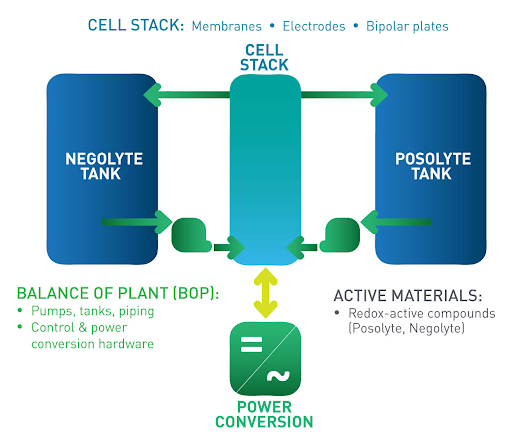
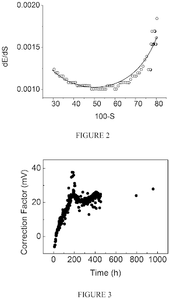
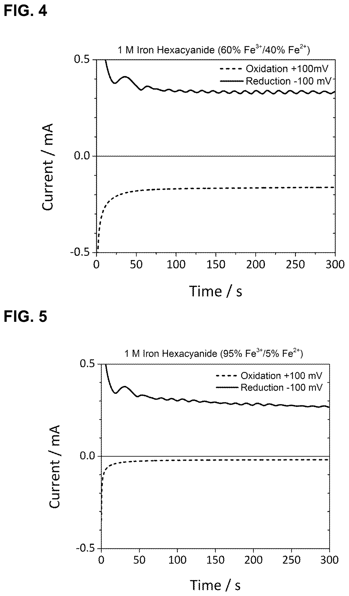
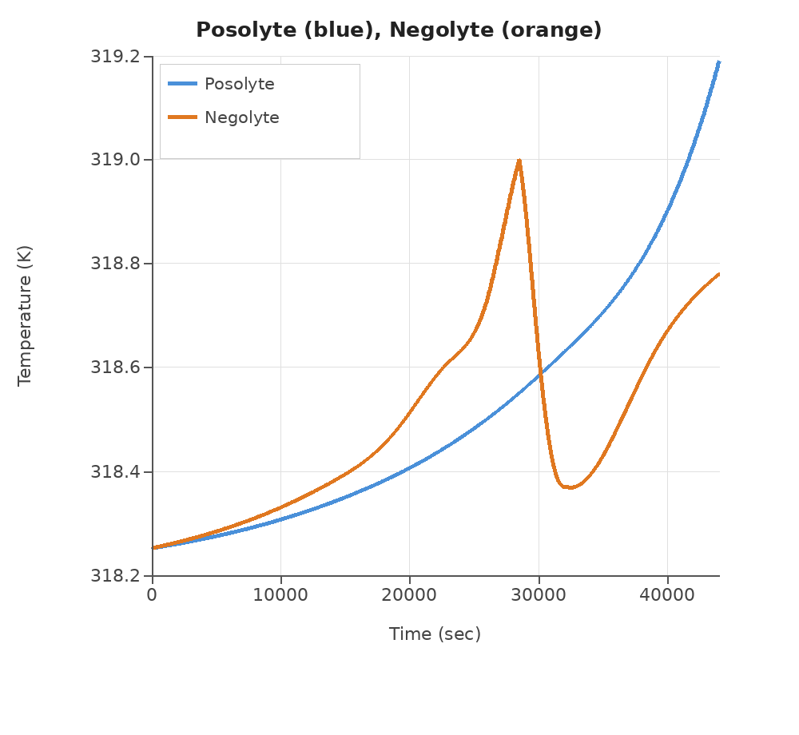
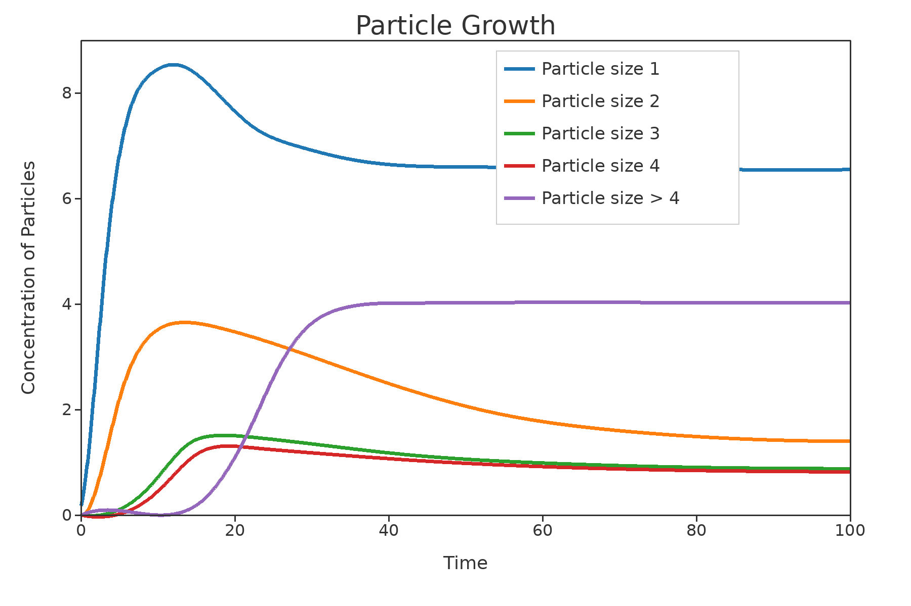
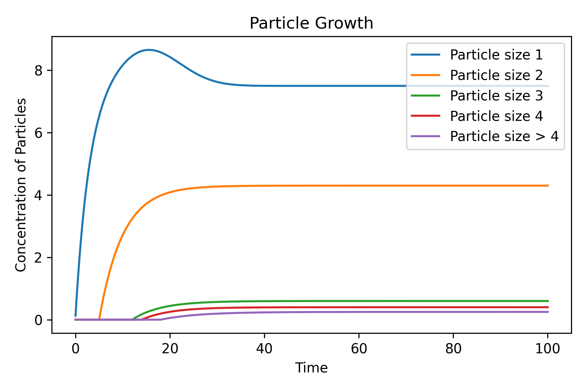
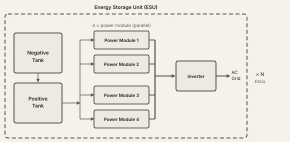
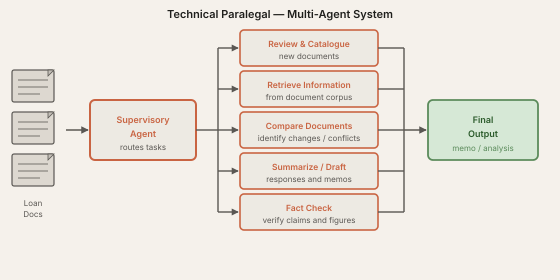
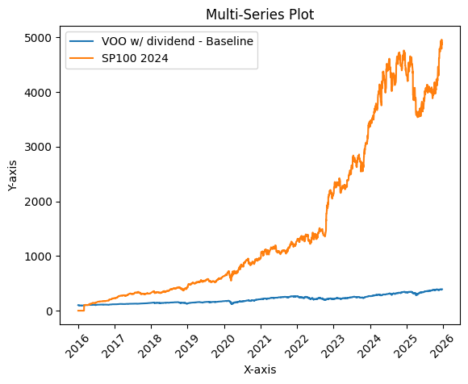
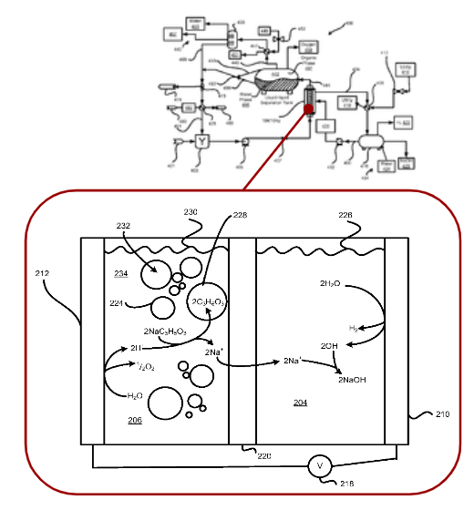

Multidisciplinary engineer with experience spanning electrochemical R&D, grid-scale energy systems, physics-based modeling, project finance, and applied AI.
Currently at the DOE Loan Programs Office.
About
My background is in designing, building, and testing first-of-a-kind electrochemical and grid-scale energy systems. At Sun Catalytix and Lockheed Martin — which acquired Sun Catalytix in 2014 and continued operating the program as a small, startup-like product team — I spent a decade scaling flow battery technologies from bench-top cells to demonstration systems, working across system design, electrical architecture, controls logic, and maintenance planning.
Along the way I developed novel electrochemical instrumentation methods for real-time state-of-charge monitoring, led the logistics and sustainment engineering program to support commercial scale-up and deployment, and built a physics-based Python model of the full energy storage system, which was used by test engineers and design teams for planning and architecture trades.
I am currently at the DOE Loan Programs Office, leading technical diligence and loan negotiations on advanced manufacturing and critical minerals projects and exploring how AI tools can improve the engineering review workflows applied to billion-dollar project evaluations. Outside of that, I train small transformer networks, run an algorithmic trading system on AWS, and try to build things rather than just talk about building them.
Selected Work
A cross-section of hands-on technical work spanning system design, instrumentation, modeling, lifecycle planning, and AI tooling.
Sun Catalytix · Lockheed Martin AES
Flow Battery System Design and Scale-Up

Lead engineer for the design, build, and commissioning of flow battery test systems at Sun Catalytix and Lockheed Martin. The scale range covered by this work spanned multiple orders of magnitude: cell active area from 25 cm² to 2,000 cm², power ratings from 9 W to 65 kW, tanks from under a gallon to over 10,000 gallons, and pumps from under 1 gpm to 500 gpm.
In addition, I wrote system requirements, drafted P&IDs, ran design and safety reviews, specified instrumentation, and coordinated commissioning of the systems.
Lockheed Martin AES · 3 Granted Patents
State-of-Charge Sensor Development and Patents
Over several years at Lockheed Martin I led development of novel in-line methods for monitoring state-of-charge in flowing electrolytes in real time. The work started with ORP probe calibration techniques and expanded into attenuated total reflectance spectroscopy and limiting-current methods, each requiring its own hardware design, integration into prototype hardware, validation against known standards, and diagnosis of failure modes in an operating system.
Three of these efforts resulted in granted patents.

ORP calibration curve (top) and correction factor stability tracked over nearly 1,000 hours of operation (bottom), demonstrating long-term stability of the calibration method.

Limiting current response at 60% SOC (top) and 95% SOC (bottom); current plateaus for each test sample form the basis of the SOC measurement method.
Lockheed Martin AES · Python Modeling
Physics-Based Dynamic Python Model
I built a Python model of a complete flow battery energy storage unit using an object-oriented approach, capturing transient behavior to understand electrolyte temperatures, SOC evolution, water transport, heat exchanger dynamics, and stack resistance as a function of operating conditions. The architecture was modular by design, so individual subsystems could be refined without touching the rest of the model.
Test engineers used it to plan test sequences before committing to hardware runs. Design teams used it to answer architecture questions such as whether a single heat exchanger could control both electrolyte temperatures, and what happens to power module string currents when one stack starts to degrade. Later work extended the model to track particle size distribution under different filtration conditions.

Bulk electrolyte temperatures over a charge-discharge cycle showing cooling of one electrolyte could manage system temperatures.String current redistribution as a single stack begins to degrade. A failure mode that had not yet been observed during testing.

Particle size distribution without filtration. Depending on growth and settling kinetics, either small or large particles can dominate at steady state in the electrolyte.

With active filtration, particles above the filter cutoff decrease as expected, while steady-state small particle quantities can actually increase as the distribution shifts.
Lockheed Martin AES · IPT Lead
Logistics and Sustainment Engineering
As Logistics and Sustainment Engineering IPT Lead at Lockheed Martin, I built the LSE function for the Advanced Energy Storage program from scratch. The work covered reliability-centered maintenance analysis, reliability block model of the full system, fault detection and isolation analyses, O&M and decommissioning cost models, and phased maintenance strategies for the path from pilot to early commercial scale.
The reliability and cost models were the most consequential output: component selection, redundancy levels, and service intervals were quantified against total-cost-of-ownership targets, giving hardware design trades a financial basis beyond engineering intuition. I also developed the deployment infrastructure plan and market requirements for the commercial scaling pathway, and managed the function's budget and schedule as it grew.

Simplified high-level reliability block diagram illustrating the series and parallel structure of the system design.
DOE Loan Programs Office · Current Work
AI Tooling for Engineering Workflows
At the DOE Loan Programs Office, I am leading a division-level effort to explore how AI can improve the engineering intake and technical document review workflows used to evaluate billion-dollar project applications. The current process relies on manual reviews, unstructured documents, and institutional memory, which does not scale as application volume grows and the technology landscape broadens.
The work involves scoping multi-agent architectures for intake screening, parallel technical document analysis, and risk flagging, as well as evaluating cloud-based ML platforms for potential implementation. We are in an active assessment and prototyping phase. The intent is something that functions as a technical analyst, not a replacement for one.

Personal Projects · AWS · Python
Self-Directed AI and Technical Projects

Algo trader performance vs. VOO dividend baseline, 2016–2026.
I built and deployed an algorithmic trading system on AWS EC2, executing trades via the Alpaca API in paper-trading mode. The performance chart shown is my own output.
As a separate project, I trained small transformer networks on equity price data to explore whether transformers could learn useful patterns in market movements. When training data became the bottleneck, I built a synthetic data generation pipeline to try and expand the base training set, then use real data to fine tune training.
Around 2023 I also built a RAG-based research assistant using Llama 2-13B and LangChain for technical document search and summarization, a good way to learn how much the field would change in the next two years.
Ceramatec · 2008–2011
Early-Career Bench-Scale R&D

Electrochemical cell from the sodium lactate caustic recycling process, showing NaSICON membrane-mediated sodium transport.
From 2008 to 2011 I was a bench-scale R&D engineer at Ceramatec in the NaSICON group, working on electrochemical and process engineering projects that spanned a wide range of industrial applications: sodium lactate caustic recycling, biodiesel catalyst production, nuclear waste stream processing, sodium aluminate recovery, and bleach production from seawater.
My role on each covered the full lifecycle: writing proposals, developing test plans, designing and building test stands, running experiments, and authoring final reports. I also modeled single- and multi-tubular electrochemical stacks for fluid flow and heat transfer, which was my first real exposure to the kind of process-level modeling I would return to years later in flow batteries.
Patents
Flow battery with a dynamic fluidic network.US Patent 11777128 B1 · Granted October 3, 2023
Apparatus and method for determining state of charge in a redox flow battery via limiting currents.US Patent 10833340 · Granted November 10, 2020
Concentration management in flow battery systems using an electrochemical balancing cell.US Patent 10461352 · Granted October 29, 2019
Methods for determining state of charge and calibrating reference electrodes in a redox flow battery.US Patent 10388978 · Granted August 20, 2019
Method and apparatus for measuring transient state-of-charge using inlet/outlet potentials.US Patent 10186726 · Granted January 22, 2019
Method and device for carboxylic acid production.US Patent 9057137 B2 · Granted June 16, 2015
Systems and methods for removing catalyst and recovering free carboxylic acids after transesterification reaction.US Patent 8247585 B2 · Granted August 21, 2012
Background
Education
MS Chemical Engineering Tufts University, 2018
BS Chemical Engineering University of Rochester, 2008 Minor in Environmental Engineering
Other
Technical mentor and judge for the CleanTech Open accelerator program since 2023, supporting startups in clean energy and sustainable technology
Early-stage pitch deck and strategy guidance for a recently launched deep-tech micro-VC focused on companies differentiated by strong IP
.png)